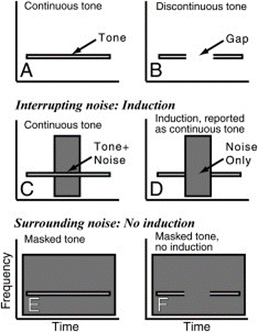
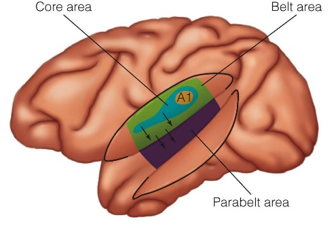

What is it?
The continuity illusion takes place when a gap in a discontinuous auditory stimulus is filled with “noise”. As the name suggests, the stimulus is misperceived to be continuous. This stimulus can be anything from a simple pure tone to more complex music or speech. [ ]

Noise is the word we use for unwanted sounds that interferes with our hearing of sounds of interest.
How does it work?
Understanding the neural mechanisms underlying the continuity illusion is currently a research focus.
Also referred to as auditory induction or temporal restoration, this illusion is demonstrated across a wide range of species and is a well-conserved mechanism enabling us to make sense of sounds of interest when disrupted by immaterial background noise.
Hence, unlike many other auditory illusions, the continuity illusion serves an important function in organisms.
For example, when listening to a friend speak in a noisy room, we can make sense of what they say even when parts of words are obscured by the background noise.
Evidence shows top-down expectations are important in modulating this process - the illusion is stronger when listening to discontinuous words or familiar songs over unfamiliar songs or ‘pseudowords’. Data from a 2013 study suggests communication between the auditory cortex and memory centres (in the right medial temporal lobe and basal region) is important in facilitating the illusion in these cases. It seems you hear what you think you will hear!
However, while higher brain regions are recruited to maintain more complicated precepts like illusory music, it seems oftentimes the illusion can be maintained by early auditory cortical processing alone.
In a 2007 study involving macaque monkeys it was found that the responses of neurons in the primary auditory cortex were the same for both interrupted and continuous tones – in both cases the neurons responded as if the noise was continuous! The same thing was seen in 2016 with EEG analysis of the brainstem. It has also been demonstrated that the illusion can take place regardless of whether the listener is paying close attention to the interrupted sound.
We know induction is strongest when the noise filling the interval contains energy at the frequency of the sound to be restored, and induction cannot occur if the interval is silent.
Lastly, listeners have a higher tendency to experience phantom sounds when a certain type of brainwave, alpha oscillations, are reduced. It has been suggested that cortical alpha waves play a part in selective auditory inhibition, allowing us to extract the useful information from noisy sound signals.

Illustrated here, the auditory cortex is currently divided into the following divisions;
The primary auditory cortex (A1)
The belt or secondary auditory cortex (A2)
The parabelt or tertiary auditory cortex (A3)
Future applications of research in this area?
One prospective application of auditory induction research may be to further elucidate the pathophysiology underlying tinnitus, which is the tendency to hear phantom sounds. Similarly to as seen in the continuity illusion, tinnitus patients often show reduced alpha wave activity, however little is known about what role this plays within the pathogenesis.